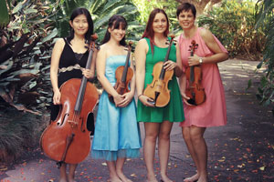

Upcoming Event
Aviva String Quartet

The superb foursome return with their final concert for 2015, bringing their signature style
of classical and modern music to the masses in their own fresh and entertaining style.
Featuring:
Caroline Lloyd-Doolan on violin
Susan Fraser on violin
Jessica Winton on viola
Ivy Wu on cello
2pm Sunday 29 November at C2 (Townsville Civic Theatre)
Jazz, rock, blues and modern top-40 songs featuring vocalists, trumpets, saxophones, trombone, drums, piano/keyboard and guitars.
Some titles from the repertoire - It Don't Mean a Thing - Mustang Sally - Spinning Wheel - Moondance - In the Midnight Hour - Le Belleclaire Blues - Lady Madonna - Skyfall - Shake a Tail Feather - Soul Man - Peter Gunn - Minnie the Moocha - Sweet Home Chicago - R.E.S.P.E.C.T. - Everybody - Leave Your Hat On - Superstition - The Letter - Proud Mary - Knock on Wood - I Got You - ROCK in the USA - December 1963 (Oh What a Night!) - Don't Know Why - Walkin' on Sunshine
Contact Andi Hodgson 0421 072 625
In 1983 the Townsville music center was establised and presented with a $50 dollar cheque from the Townsville City Council. In 2003, 20 years after establishment the Townsville Music Center relocated thier office to the Townsville Civic Theatre builing loced on Boundry street Townsville. A number of events are held my the Townsville Music center on a regular basic and it is allways searching for new members and inspiring musicians. Current or future event information can be found on the Events page, while information about the associated musicians can be found on the Musicians page on this website.
Futhur information about the Townsville Music Center can be found in the book tittled "Townsville Community Music Center: some memories of the first 25 years" by Jean Dartnall, which are available from the Main office. For any other questions that may arise feel free to contact the office.